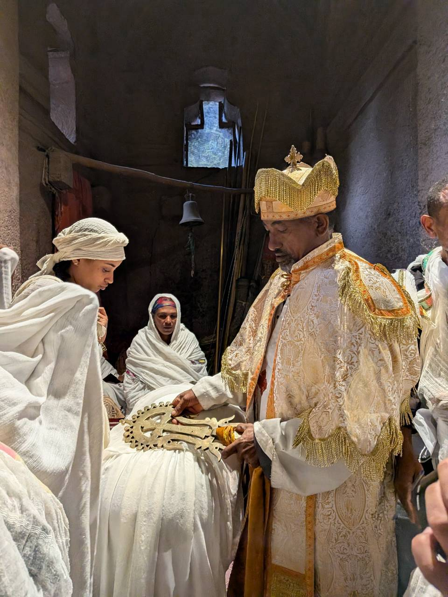

世界遺産ラリベラ岩窟教会群を歩く旅
エチオピア北部の高地に、岩を掘り下げて造られた教会群があります。「アフリカの新エルサレム」とも呼ばれる、ラリベラです。教会は一つの岩の塊を上から掘り下げて造られた一枚岩の建築で、1978年にユネスコ世界遺産に登録されました。 入場チケットについて 現地でチケットを購入すると、一帯のほとんどの教会に入ることができます。私が訪れたときは100ドルのチケットでした。
現地の説明ガイドについて
各教会には、説明をしてくれる方が1人ずついます。言語はアムハラ語か英語です。ガイドがいないと、見ているものの背景が分かりにくいため、説明を聞きながら回ることをおすすめします。 訪れる時期は、イベントを調べてから 私は9月にラリベラを訪れたので、エチオピア新年の催しを見学することができました。
食事・水・お風呂
・食事 ：私はレストランを利用しました。・水 ：ペットボトルの水を購入していました。
・お風呂 ：水圧は基本的に弱めです。
シャンプーが備え付けられていない宿も多いので、持参をおすすめします。